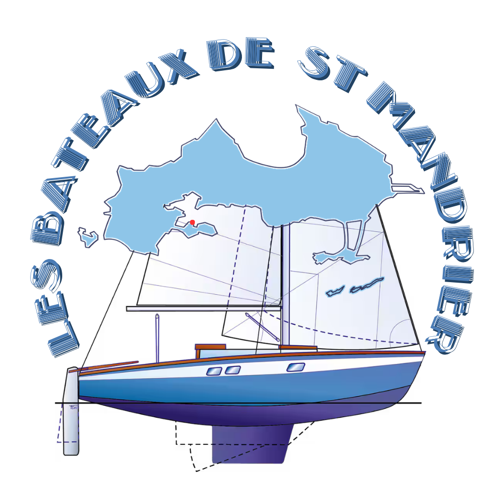

Toulon Boat Show
Port of Toulon, Var
Our biggest trade event of the year. Come and see the Lombarde 5.5 and the Makaire 8 on display, talk to our builders and discover our latest options.

Three boats built right here, for fishing and leisure.
“Built here, made for the water.”
Les bateaux de St Mandrier is a small boatyard based in St Mandrier sur Mer, in the south of France. We design and build three pleasure boats in our own workshop: a light fishing boat, a cosy cruiser and a comfortable big-game fishing boat.
Our philosophy is simple: a good boat should be easy to use, honest in its construction and made to last. We build every boat by hand, close to the water it will sail on, and we take the time to help each customer choose the model that fits what they want to do on the water.
Each boat is built by hand in our workshop, with care for every detail.
Boats that are easy to handle, transport and maintain, for everyone.
Low draft, efficient hulls and local building: we want to leave a light wake.
Our brand film (French audio, English subtitles).

The simplest and lightest boat in the range. A fishing boat for the dedicated angler that is also great for leisure outings, and that can go where the water is shallow thanks to its very shallow draft.
Sillage 4 advert (French audio, English subtitles)

Designed for cruising at sea, on a lake, an estuary or a canal. Easy to transport, it offers a cabin for two people and can be fitted with a galley. The stern has two benches and a platform.
Lombarde 5.5 advert (French audio, English subtitles)

The largest and most comfortable. Made for trips at sea or on a lake, and for big-game fishing. A forward cabin, a central cabin with a galley or lounge area, a helm station at the stern and a sun deck on the roof.
Makaire 8 advert (French audio, English subtitles)
Our biggest trade event of the year. Come and see the Lombarde 5.5 and the Makaire 8 on display, talk to our builders and discover our latest options.
A day of boat parades, local food and sea trials. Visitors can step aboard the Sillage 4 and try it out in the bay.


Les bateaux de St Mandrier unveils the Sillage 4, a 4-metre boat weighing only 250 kg. Its very shallow draft lets anglers reach spots that larger boats cannot.
Easy to tow and equipped with a cabin for two, the Lombarde 5.5 is designed for relaxed outings. Options include an outboard motor or a mast.
With two cabins, a helm station at the stern and a sun deck on the roof, the Makaire 8 is the boatyard's flagship. It can take up to two powerful engines.
Tell us what you want to do on the water, and we will help you choose the right model.
Write to us
Social networks